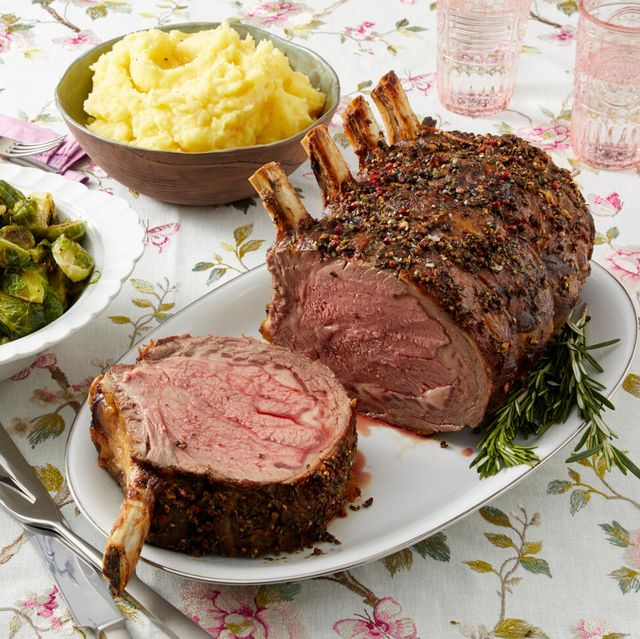

Chef John's Perfect Prime Rib

Description
This is a specific formula for achieving a perfectly pink prime rib
cooked somewhere a shade under medium rare. To use this method you must
have a full-sized, modern oven with a digital temperature setting that
indicates twhen it is preheated. Older ovens with manual controls can
vary greatly, and the doors may not have the proper insulation.
Ingredients
- 4 pounds prime rib roast
- 1/4 cup unsalted butter, softened
- 1 tablespoon freshly ground black pepper
- 1 teaspoon herbes de Provence
- kosher salt
Steps
-
Place rib roast on a plate and bring to room temperature, about 4
hours.
- Preheat an oven to 500 degrees F (260 degrees C)
-
Combine with butter, pepper, and herbes de Provence ina bowl; mix
until well blended. Spread butter mixture evenly over entire roast.
Season roast generously with kosher salt.
-
Roast the 4 pound prime rib int eh preheated oven for 20 minutes. Turn
the oven off and, leaving the roast in the oven witht eh door closed,
let the roast wit in the oven for 2 hours. Remove roast from the oven,
slice, and serve.